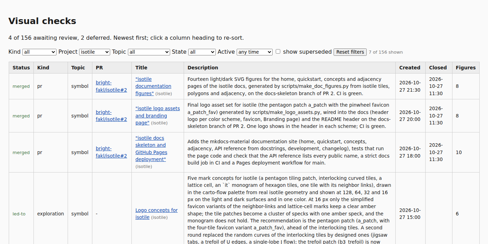

The builder (scripts/build_visual_checks_index.py) and its tests move from carto-flow to this repository, read each page's repository from its url and filter the index by project. Nothing in the carto-flow package changes and there is nothing to compare visually except one screenshot of the new Project filter; the page gives the written evidence.
The change removes a script and its test from carto-flow and adds them to this repository, so cartogram output cannot change. The one visible result is the new Project filter of the index.
scripts/build_visual_checks_index.py and tests/test_visual_checks_index.py are deleted; CONTRIBUTING.md points to this repository and the command python3 scripts/build_visual_checks_index.py; the .gitignore comment no longer names the script. notify-visual-checks.yml stays.a126c0d; the root defaults to the repository that contains the script; scripts and tests are not pages; the Check and Update workflows run the script from this repository (no sparse checkout of carto-flow) and Check runs the builder tests.url, with one gh pr list call per repository, states and closed times keyed by repository and number, and owner/repo#N shown for pages of other repositories. The five isotile PR pages lost their hand-written status: merged.project header (default: repository name of the url, else carto-flow) and the Project filter. exploration-isotile-logo and proposal-isohedral-tiling-library have no url and are set to project: isotile; exploration-logo-concepts (the carto-flow logo) and the other pages without a url fall in carto-flow.uv run --with pytest pytest tests): the 74 tests moved from carto-flow, adjusted for keys of the form (repository, number), plus 21 new tests for repository parsing from the url, the fallback, same number in two repositories with different states, an unreachable repository, --convert --repo, the project derivation and the filter.uv run ruff check ., uv run ruff format --check . and pre-commit pass; uv run pytest -m "not slow" tests: 1,676 passed, 2 skipped, 4 xfailed; nothing references the removed test. CI of PR 188: quality, check-docs, tests on Python 3.10 to 3.13, the pandas 3 job and the wheel smoke test pass.Before (script of carto-flow, status: merged written by hand; numbers read as carto-flow's):
merged #2 isotile-doc-figures
merged #2 isotile-logo-assets
merged #2 isotile-docs-skeleton-pr
led-to - exploration-isotile-logo
merged #3 isotile-phase-2-pr
merged #1 isotile-phase-1-prAfter (builder here, without the explicit status; states from bright-fakl/isotile):
merged bright-fakl/isotile#2 isotile-doc-figures
merged bright-fakl/isotile#2 isotile-logo-assets
merged bright-fakl/isotile#2 isotile-docs-skeleton-pr
led-to - exploration-isotile-logo
merged bright-fakl/isotile#3 isotile-phase-2-pr
merged bright-fakl/isotile#1 isotile-phase-1-pr
Index filtered to project isotile: 7 of 156 pages (five PR pages, the logo exploration and the library proposal), each title followed by its project because there is more than one project.